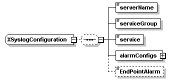
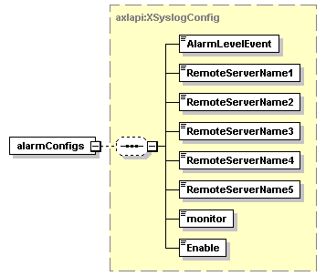

| diagram |  |
| namespace | http://www.cisco.com/AXL/API/10.5 |
| children | serverName serviceGroup service alarmConfigs EndPointAlarm |
| source | <xsd:complexType name="XSyslogConfiguration"> <xsd:sequence minOccurs="0"> <xsd:element name="serverName" type="xsd:string" nillable="false"/> <xsd:element name="serviceGroup" type="axlapi:XServiceGrouping" default="CM Services" nillable="false"/> <xsd:element name="service" type="xsd:string" nillable="false"/> <xsd:element name="alarmConfigs" type="axlapi:XSyslogConfig"/> <xsd:element name="EndPointAlarm" type="axlapi:boolean" minOccurs="0"/> </xsd:sequence> </xsd:complexType> |
element XSyslogConfiguration/serverName
| diagram | |||||
| type | xsd:string | ||||
| properties |
|
||||
| source | <xsd:element name="serverName" type="xsd:string" nillable="false"/> |
element XSyslogConfiguration/serviceGroup
| diagram | |||||||
| type | axlapi:XServiceGrouping | ||||||
| properties |
|
||||||
| source | <xsd:element name="serviceGroup" type="axlapi:XServiceGrouping" default="CM Services" nillable="false"/> |
element XSyslogConfiguration/service
| diagram | |||||
| type | xsd:string | ||||
| properties |
|
||||
| source | <xsd:element name="service" type="xsd:string" nillable="false"/> |
element XSyslogConfiguration/alarmConfigs
| diagram |  | ||
| type | axlapi:XSyslogConfig | ||
| properties |
|
||
| children | AlarmLevelEvent RemoteServerName1 RemoteServerName2 RemoteServerName3 RemoteServerName4 RemoteServerName5 monitor Enable | ||
| source | <xsd:element name="alarmConfigs" type="axlapi:XSyslogConfig"/> |
element XSyslogConfiguration/EndPointAlarm
| diagram |  |
||||||
| type | axlapi:boolean | ||||||
| properties |
|
||||||
| facets |
|
||||||
| source | <xsd:element name="EndPointAlarm" type="axlapi:boolean" minOccurs="0"/> |
XML Schema documentation generated by XMLSpy Schema Editor http://www.altova.com/xmlspy